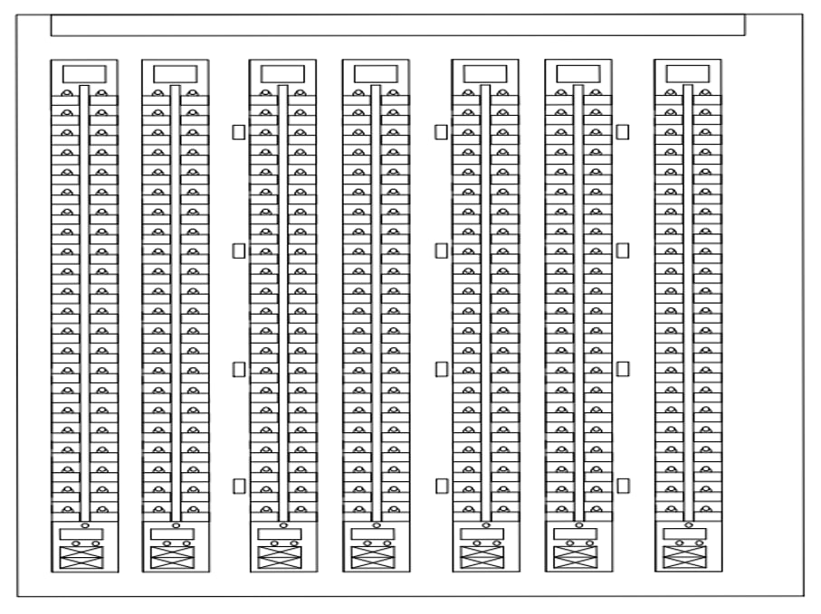
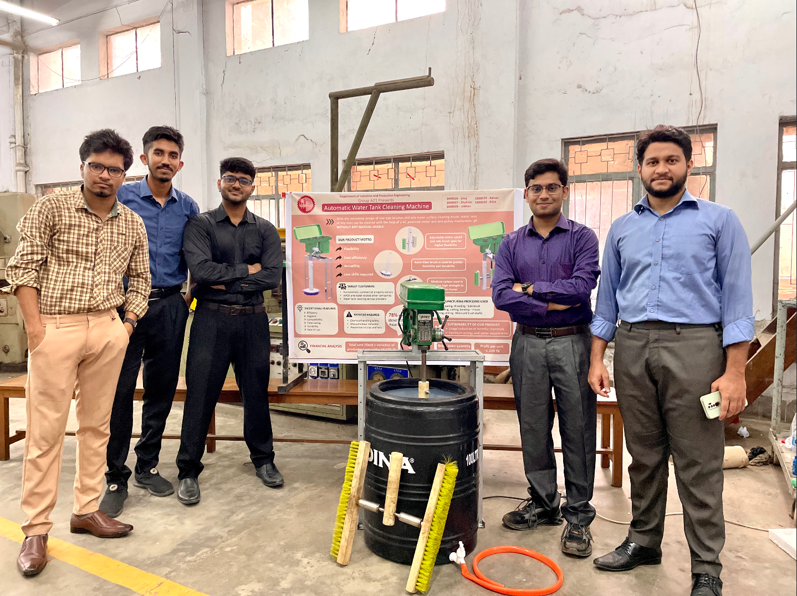
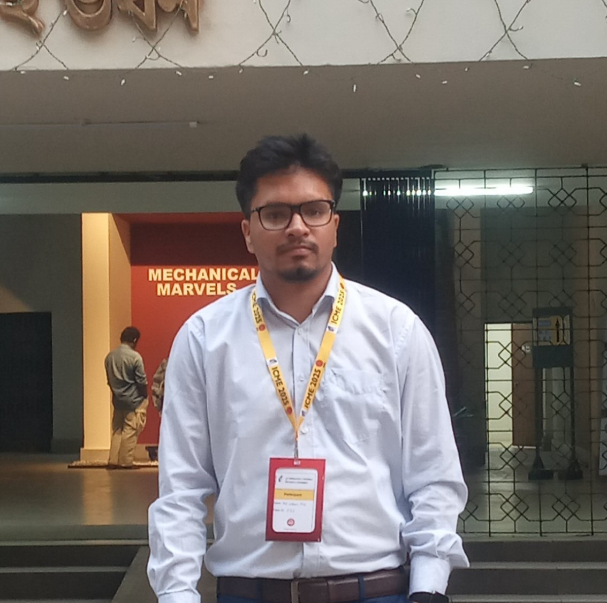
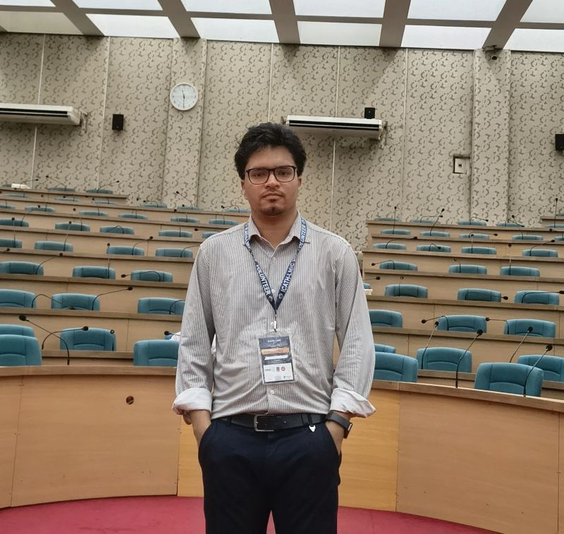
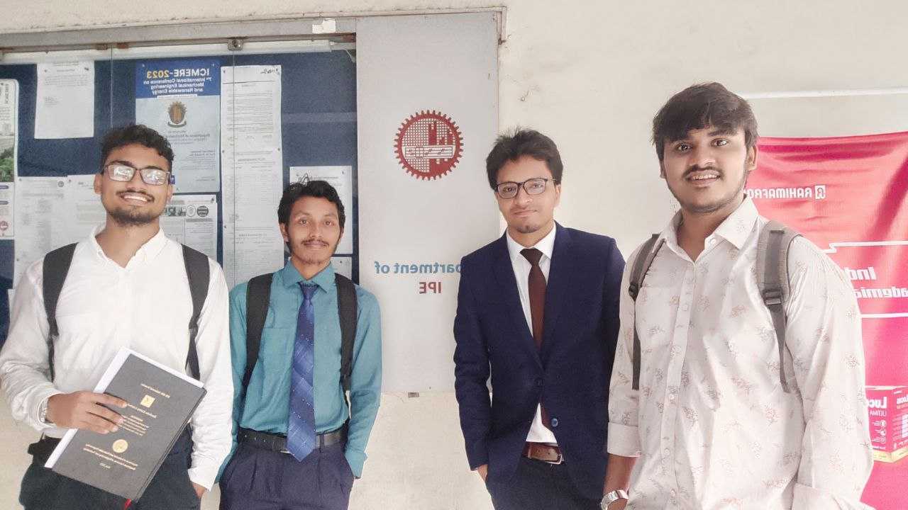
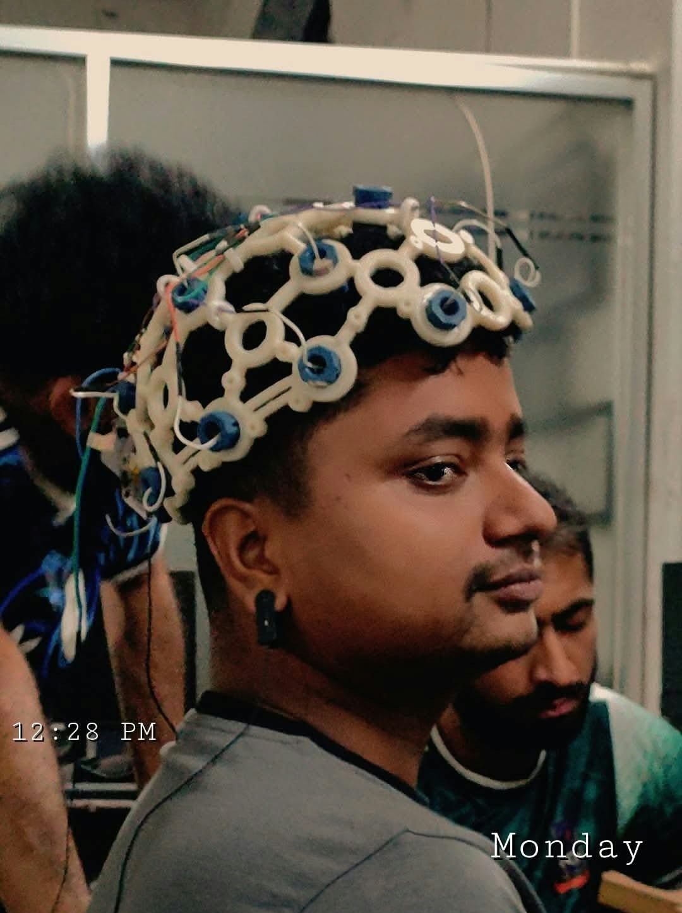
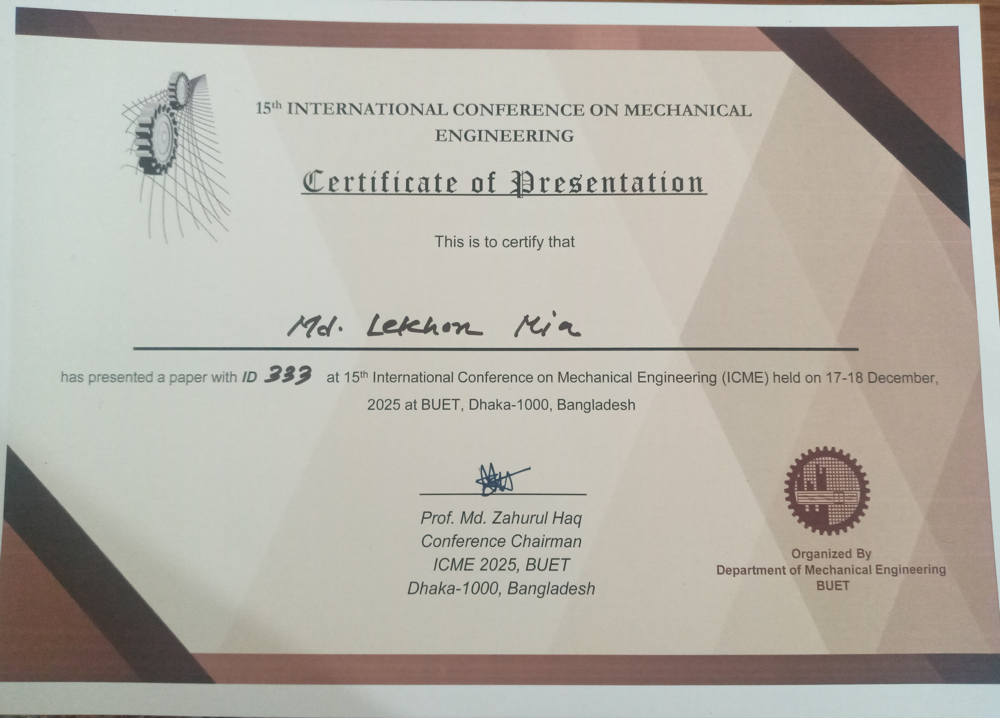

Education
- M.S. in Biomedical Physics and Technology - University of Dhaka (DU), Dhaka, Bangladesh (May 2026 - Jul 2027)
- B.Sc. in Industrial and Production Engineering - Bangladesh University of Engineering and Technology (BUET), Dhaka, Bangladesh (Apr 2019 - Jul 2024)
- HSC in Group Science -Shahid Syed Nazrul Islam College, Mymensing, Bangladesh (2016 - 2018)
Publications
- Mia, M. L., Khan, R. R., & Masud, D. A. (2026). Fabrication and Characterization of PVA/TiO2/Jute Fiber Composite Film Via Solution Casting Method. paper link
Projects
|
|
Automatic Water Tank Clening MachineDeveloped an automated water tank cleaning machine as a hardware–software integrated project during the 6th and 7th semesters of my undergraduate program. Designed and fabricated the prototype in the Engineering Workshop, integrating mechanical components with automated motor control. Created 3D CAD models in SolidWorks and optimized motor speed through prototype testing. |

|
Beach Motor Bike DesignDeveloped a detailed 3D CAD model of a beach motor bike using SolidWorks, incorporating its frame, suspension system, and drivetrain layout. Designed and assembled the major components to achieve appropriate weight distribution and rider comfort. Utilized surface and assembly modeling tools to visualize and refine the complete vehicle structure. |
|
|
DJI Mavic 3 Pro Aerial 3D Drone DesignDesigned a detailed 3D CAD model of the DJI Mavic 3 Pro using CATIA V5, including major structural and functional components. Developed parametric parts and assemblies for the propeller blades, arms, and camera gimbal system. Applied assembly and design principles to ensure proper component integration and functional representation of the drone structure. |
|
|
Production Efficiency Evaluation and Output Rate CalculationConducted Standard Minute Value (SMV) analysis and calculated hourly production output to evaluate sewing-line performance. Identified production bottlenecks and analyzed workflow inefficiencies affecting line productivity and capacity. Proposed productivity improvement opportunities through improved line balancing and process optimization. |
|
|
Production Efficiency Evaluation and Output Rate CalculationDesigned an ergonomically optimized drill machine handle based on anthropometric measurements to improve grip and user comfort. Developed the 3D CAD model in SolidWorks, incorporating hand dimensions and ergonomic design principles. Optimized the handle geometry to reduce grip fatigue, enhance grip strength, and provide greater comfort during prolonged operation |
Internship Projects

|
Ergonomic Input Table DesignDeveloped a CAD model of an ergonomic inspection table for sewing-line operations during an industrial internship in the garment sector. Applied anthropometric data and range-of-motion analysis to optimize workstation dimensions and improve user accessibility. Evaluated the design against ergonomic requirements to enhance operator comfort and inspection efficiency. |
|
 |
Efficient Floor Layout ModelDeveloped and proposed an optimized apparel production floor layout during an industrial internship to improve workstation arrangement and material flow. Redesigned machine placement and aisle spacing to provide better operator movement and accessibility while minimizing unnecessary movement. Improved overall production productivity by 58% through enhanced workflow organization and layout optimization. |

|
Ergonomic Workstation DesignDesigned an ergonomic workstation as a third-year undergraduate sessional project, focusing on user comfort and accessibility. Applied anthropometric measurements to determine appropriate chair and table dimensions. Developed the complete workstation design in SolidWorks, integrating ergonomic principles with functional requirements. |
Visits
|
|
Industrial Visit at BITACParticipated in an industrial visit to BITAC as part of the Machine Tool Sessional during undergraduate study. Gained hands-on exposure to 5-axis and 3-axis CNC milling, CNC lathes, EDM, and other computer-aided manufacturing processes. Observed modern machining operations and digital manufacturing practices, strengthening practical knowledge of advanced machine tools. |
Photo Gallery





CV
Certificates


Research and Professional Background
My research utilizes principles of biomechanics to advance healthcare and enhance human performance, longevity, and quality of life. My educational journey is a testament to my commitment to merging technology with healthcare. I embarked on this path with a bachelor's in Industrial and Production Engineering from the Bangladesh University of Engineering and Technology (BUET), laying the groundwork for engineering principles that would shape my career. My undergraduate research involved environmental safety designing and characterizing eco-friendly new mulch materials alternatives of poly-ethylene .I did my internship on a well-known apparel industry analyzing the posture of the workers. I also worked on occupational safety particularly estimating the biomechanical load during prolong sitting. The shift to biomedical engineering was a natural progression, leading me to Biomedical Physics and Technology department of University of Dhaka, where I am doing my master's. My master's thesis on the complexities of hand movement analysis for surgical suturing skill assessment, reflecting my deep interest in biomechanical analysis to advance surgical education. During my B.S. and M.S., I gained substantial hands-on experience conceiving and developing prototypes from the ground up.
Additionally, my athletic enthusiasm and intense interest on sports further fuels my motivation to unravel the intricacies of human movements. As a foot enthusiast , I've witnessed the principles of sports biomechanics in action, investing countless hours and relentless effort to improve my kicking accuracy to cast a goal. Consequently, I'm driven to concentrate on translational biomechanics research, with a particular interest in exploring the dynamic interaction between humans and machine systems, such as exoskeletons, that intimately interface with the human body. In my ms research, I am at the forefront of wearable platforms, human-machine interaction, and performance enhancement, continually striving to improve the quality of human lives and push the boundaries of human performance. My recent research has focused on gait and kinematic analysis, examining how prolonged exposure to a back-support exoskeleton affects lifting kinematics. My ongoing work primarily focuses on the biomechanical analysis of the trunk to identify and understand the underlying relationships between low back fatigue/pain and trunk motor variability, as well as how exoskeletons impact both factors.